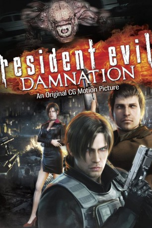

#3557 Resident Evil CG2 - Damnation
 
 IMDB-Wertung: 6.5 / 10
IMDB-Wertung: 6.5 / 10  Metascore: 0
Metascore: 0 
US-Special-Agent Leon S. Kennedy schmuggelt sich in ein kleines osteuropäisches Land ein, um Gerüchten nachzugehen, nach denen bioorganische Waffen (BOW) im Krieg eingesetzt werden. Kurz nach seiner Infiltration ruft ihn die amerikanische Regierung zur sofortigen Rückkehr auf. Doch Leon will die Wahrheit wissen, ignoriert den Befehl und stürzt sich entschlossen in den Kampf, um weitere Tragödien durch die BOW zu verhindern...
Jahr: 2012
Dauer: 100 Minuten
FSK: 16
Land: Japan Studio: Sony Pictures Home EntertainmentTonspuren: DTS - ,
Untertitel: Deutsch, Englisch,
Auflösung: 720p (1280x720) Größe: 5867 MB
Genre: Action, Thriller, Horror, Sci-Fi, Animation/Trick
Regisseur: Makoto Kamiya
Drehbuch: Ryûhei Kitamura
Soundtrack:
Darsteller:
Datei: X:\7+mehr(A-Z)\Resident Evil\Resident Evil CG2 - Damnation (2012, FSK16, 1280x720).mkv seit 29.04.2016
Festplatte: HD Collection-7+mehr(A-Z)+Person
 Es gibt insgesamt 15 Filme in der Gruppe '7+mehr(A-Z)\Resident Evil'
Es gibt insgesamt 15 Filme in der Gruppe '7+mehr(A-Z)\Resident Evil'